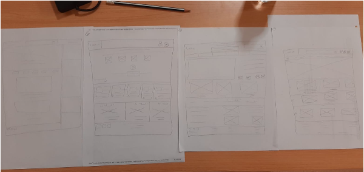
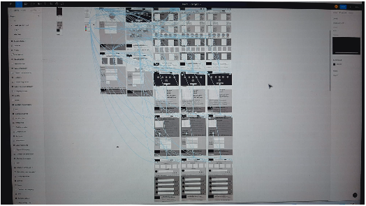
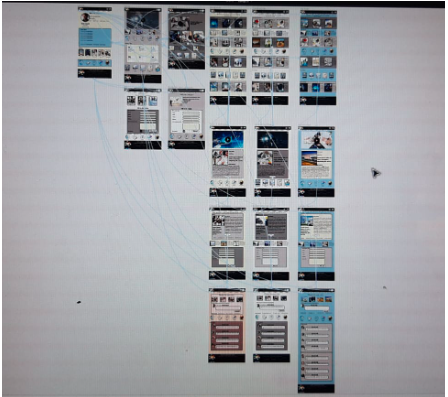
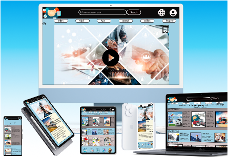

Plataforma web diseñada para ayudar a pequeñas empresas a ganar visibilidad y conectar con clientes y oportunidades laborales.
Las pequeñas empresas y emprendedores locales tienen dificultades para darse a conocer y atraer clientes. Además, los usuarios encuentran complicado acceder a información actualizada sobre servicios, ofertas y oportunidades laborales dentro de su ciudad.
Diseñar una plataforma web que permita visibilizar empresas locales, facilitar la conexión con clientes potenciales y ofrecer acceso a oportunidades laborales de forma clara y accesible.
Emprendedores, pequeñas empresas y personas en búsqueda de empleo, que necesitan una plataforma local accesible para conectar con oportunidades.
Objetivo: Encontrar empresas tecnológicas cercanas para desarrollar su carrera profesional.
Problema: Dificultad para acceder a oportunidades locales sin tener que desplazarse lejos.
Objetivo: Promocionar su pequeña empresa local.
Problema: Dificultad para llegar a nuevos clientes.
La investigación reveló que muchas pequeñas empresas tienen dificultades para ganar visibilidad online. Además, los usuarios buscan plataformas simples, rápidas y sin exceso de publicidad.
El proceso de diseño incluyó investigación de usuarios, creación de sitemap, wireframes, prototipos, pruebas de usabilidad y mejoras iterativas.
Las pruebas con usuarios ayudaron a mejorar la navegación, facilitar la búsqueda de empresas y optimizar la experiencia general de la plataforma.



La solución final es una plataforma intuitiva y accesible que permite a pequeñas empresas promocionar sus servicios y a los usuarios descubrir oportunidades locales de forma rápida y eficiente.

COMP23 mejora la visibilidad de empresas locales y facilita la conexión entre usuarios y oportunidades, ofreciendo una experiencia simple y accesible.
COMP23 ayuda a mejorar la visibilidad de empresas locales y facilita el acceso a oportunidades laborales y servicios, creando una conexión más cercana entre negocios y usuarios.
Construyamos algo increíble juntos.